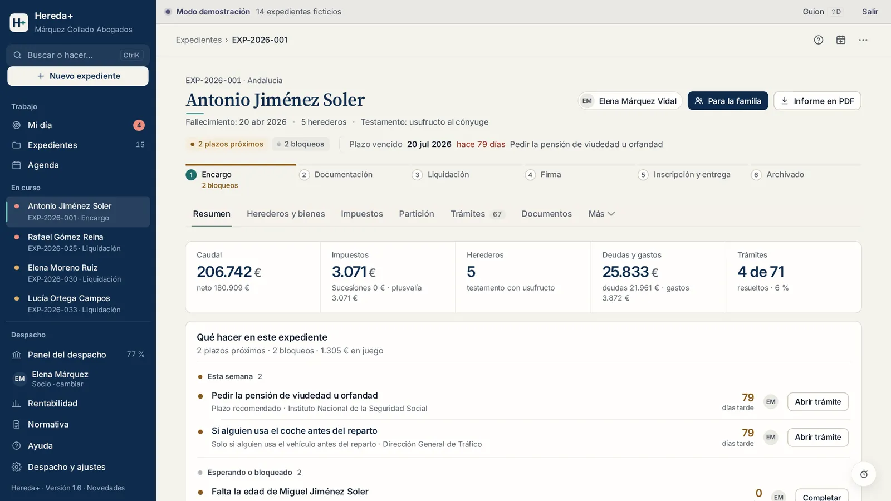
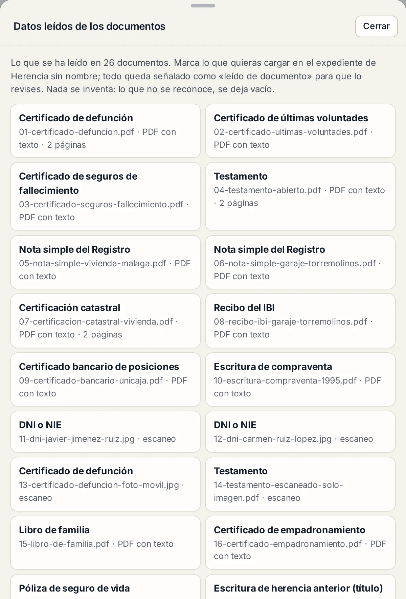
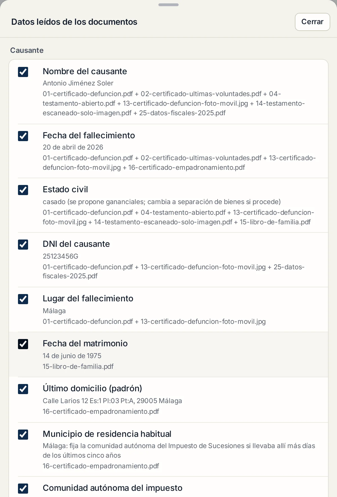
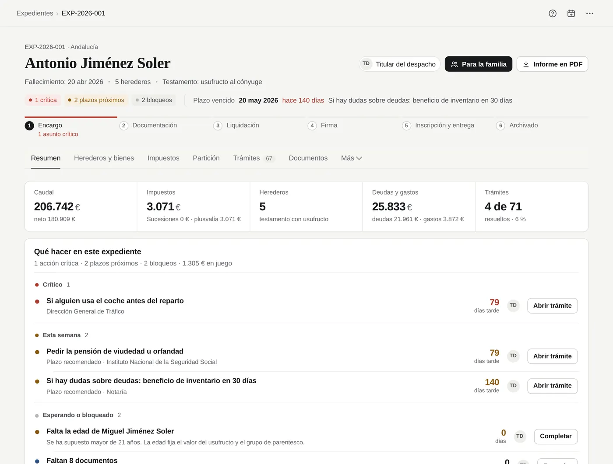
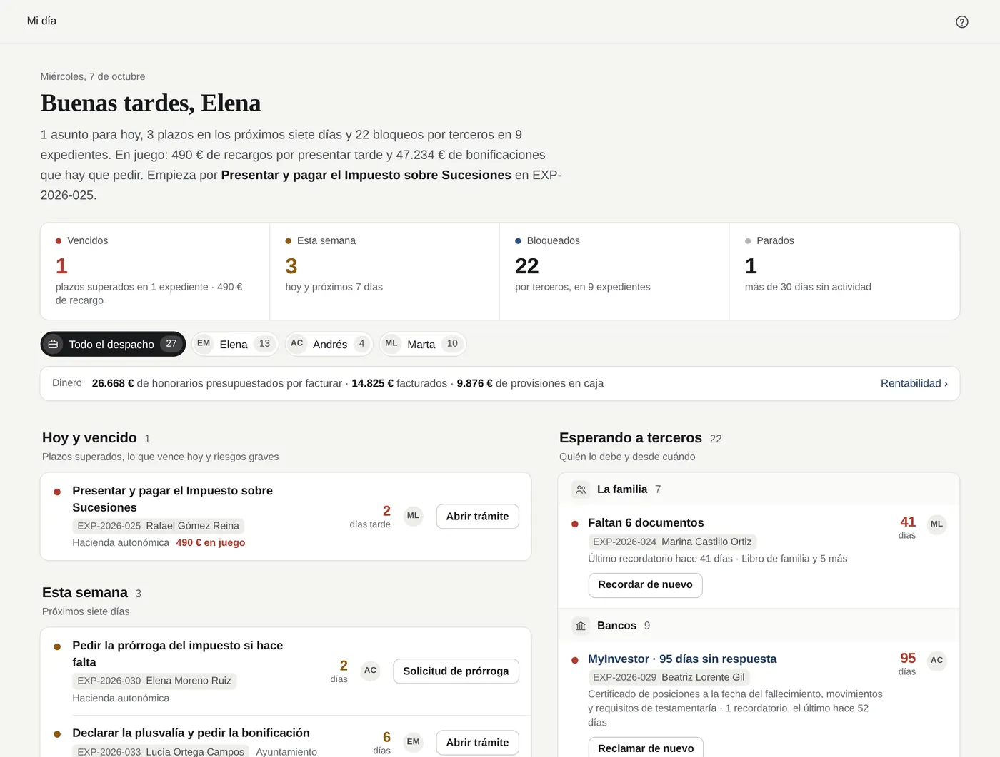
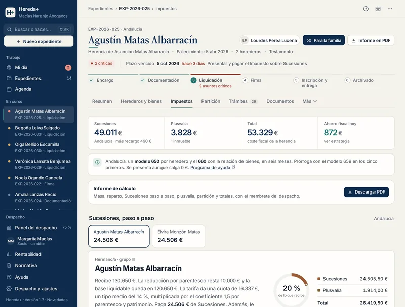
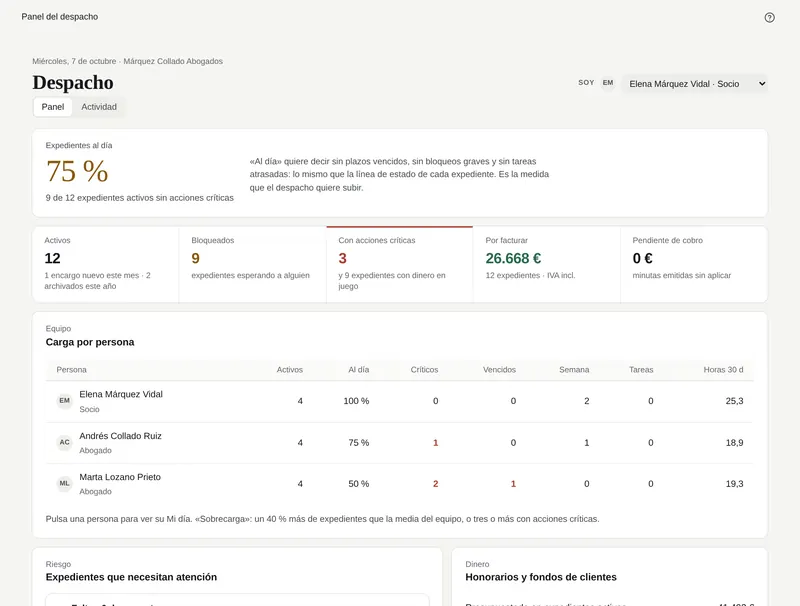

Software de sucesiones para despachos de abogados
La herencia, lista en una tarde.
Arrastra los documentos del cliente. Hereda+ los lee en tu ordenador, rellena el expediente, calcula Sucesiones y plusvalía y te dice qué hacer hoy. Tú revisas, decides y firmas.
Con todas las funciones y sin tarjeta. En el navegador, en Windows y Mac. Empieza con un despacho de demostración.

Vídeo sin sonido. Se arrastran 26 documentos ficticios a «Desde documentos»; el programa los lee en el ordenador y propone cada dato con su documento de origen; al cargarlos, el expediente queda calculado con Sucesiones y plusvalía; después se ven Mi día, las cifras del modelo 650 de cada heredero y el informe de cálculo en PDF.
Grabado con la aplicación real: 26 documentos de un caso ficticio, del arrastre al informe en PDF, en un minuto y medio y sin sonido. Descargar el vídeo.
Del montón de papeles al expediente calculado, con los plazos y los escritos. Sin teclear lo que ya dicen los documentos.
Defunción, testamento, notas simples, Catastro, bancos, DNI: en PDF, Word, escaneados o fotografiados. Cada dato dice de dónde sale.
Los expedientes y los documentos se guardan y se leen en tus equipos. No los recibimos. Sin IA y sin analítica.
Cómo funciona
Tres pasos, del montón de papeles al primer paso del día.
Lo que hoy son horas de teclear certificados, buscar la ordenanza del ayuntamiento y apuntar plazos en un Excel.
Arrastra los documentos. El programa los lee.
Certificados de defunción, de últimas voluntades y de seguros, testamento o acta de herederos, notas simples, Catastro e IBI, bancos, DNI, escrituras, facturas del funeral. En PDF, Word, Excel o correo; escaneados, fotografiados con el móvil o escaneados con la cámara desde el propio programa.
Cada dato propuesto dice de qué documento sale. Lo dudoso, o lo que choca con algo que ya estaba, va sin marcar. Tú eliges qué entra.
- Se leen en tu ordenador: los documentos no se suben a ningún servidor
- Sin IA: reglas escritas para cada tipo de documento
- Lo que no se reconoce se deja vacío, nunca se inventa


Revisa. El expediente queda calculado.
Personas, inmuebles con su valor de referencia y su valor catastral, cuentas a la fecha del fallecimiento, deudas y gastos. Con eso salen el caudal, el Impuesto sobre Sucesiones de cada heredero paso a paso y la plusvalía de cada inmueble, cada cifra con su norma.
Todo lo leído queda señalado «leído de documento» y los documentos, «por revisar» hasta que los valides.

Cada mañana, qué hacer hoy. Y los escritos, listos.
Mi día reúne lo vencido, lo que vence esta semana, lo que espera a la familia, al banco o a la notaría y desde cuándo, y lo que lleva un mes parado. Cada línea con su acción a un clic.
Del mismo expediente salen el informe de cálculo en PDF, las cifras del 650 por heredero, las solicitudes a bancos y registros, la prórroga, la renuncia y el cuaderno particional, con el membrete del despacho.

En cifras
Lo que ya hace la versión 1.6.
Cifras del propio programa, comprobables en el despacho de demostración. Las pruebas automáticas se ejecutan antes de cada versión: si una falla, la versión no se publica.
Territorios: las 15 comunidades de régimen común, Navarra, Álava, Bizkaia, Gipuzkoa, Ceuta, Melilla y la norma estatal para no residentes. En plusvalía, el tipo oficial de las 48 capitales y de los 100 municipios de más de 50.000 habitantes; en el resto, el máximo legal con un aviso para poner el de su ordenanza.
Producto
Lo que hoy está en Excel, Word, carpetas y correos, en un solo sitio.
Hecho solo para herencias: el cálculo de los impuestos y el trabajo del despacho, en la misma pantalla.
Sucesiones de 22 territorios y plusvalía de 8.132 municipios
Cada heredero con su reducción, su base, su cuota y su bonificación, y cada paso con el artículo de la ley de su comunidad. Cada inmueble con su plusvalía por los dos métodos y la ordenanza que se aplica.

El despacho entero, de un vistazo
El socio ve el porcentaje de expedientes al día, la carga de cada persona, los expedientes en riesgo, lo presupuestado, facturado y cobrado, y el tiempo medio de cada fase. Cada persona tiene su perfil: socio, abogado o administrativo.

Partición y estrategia fiscal
Cuadro de adjudicaciones con excesos, lotes que reducen la plusvalía y el ahorro de cada opción en euros, con su riesgo y su norma.
Legítimas comunes y forales
Control de legítimas también en los territorios con derecho civil propio, y cuánto costará la segunda herencia según el reparto de hoy.
Notaría y firma
Comprobación previa a la firma, paquete completo para la notaría y el texto del correo. Para la familia, una carpeta de una página y el modo reunión.
Registro de cambios
Quién cambió qué y cuándo, con el valor anterior y el nuevo: porcentajes, renuncias, valores, adjudicaciones, fase, honorarios y fondos.
Búsqueda en toda la cartera
Ctrl K encuentra expedientes, personas por nombre o NIF, inmuebles por referencia catastral, cuentas por IBAN, documentos y tareas.
Escáner con la cámara
Con el móvil, la tableta o la webcam: detecta el papel, lo endereza, lo guarda en PDF y lo lee como cualquier otro documento.
Encargo, fondos y rentabilidad
Hoja de encargo con presupuesto, provisión de fondos y suplidos, honorarios por facturar y euros por hora de cada herencia.
Traer la cartera desde Excel
Guarda tu hoja como CSV, súbela, revisa lo que va a entrar y confirma. Las herencias que ya tienes abiertas, sin teclearlas otra vez.
Calculadora para tu web
Con la marca del despacho: las familias calculan lo que pagarían y te escriben para que revises su caso. Pruébala.
Comparativa
Frente a lo que ya usas.
Por categorías, no con marcas. Si ya tienes un programa de gestión del despacho, Hereda+ convive con él: se ocupa solo de las herencias.
| Tarea | Excel y Word | Software de despacho genérico | Hereda+ |
|---|---|---|---|
| Datos de los documentos | Se teclean a mano | Se archivan; los datos se teclean | Se leen en tu ordenador y se proponen, cada uno con su documento de origen |
| Impuesto sobre Sucesiones | Una hoja propia que hay que mantener cuando cambia la ley | Por lo general, no lo calcula | 22 normativas, paso a paso y con su artículo |
| Plusvalía municipal | Buscar la ordenanza de cada ayuntamiento | Por lo general, no la calcula | 8.132 municipios; 322 con su ordenanza incorporada |
| Plazos de la herencia | Agenda y recordatorios a mano | Agenda general, sin los trámites de una herencia | 183 trámites con su plazo y su organismo, y Mi día |
| Escritos | Plantillas que se rellenan a mano | Plantillas generales | Solicitudes, prórroga, renuncia y cuaderno particional con los datos del expediente |
| Gestión general del despacho | — | Sí: facturación, agenda y expedientes de todas las materias | Solo lo de cada herencia: encargo, fondos, honorarios y tiempos |
| Varios ordenadores con los mismos expedientes | Carpeta compartida | Habitualmente, en la nube | Próximamente, como opción. Hoy, cada equipo con sus datos y exportar o importar expedientes |
| Dónde están los datos de los clientes | En tus equipos | Habitualmente, en los servidores del proveedor | En tus equipos. No los recibimos |
«Software de despacho genérico»: programas de gestión para despachos de cualquier materia. Lo que hace cada uno varía; aquí se describe lo habitual. Compruébalo con el tuyo.
Seguridad y datos
Nada sale del despacho.
Hereda+ prepara el trabajo; la decisión y la firma son del abogado. Y los datos de tus clientes se quedan contigo.
Los datos se quedan en tus equipos
Expedientes y documentos se guardan en el navegador de cada equipo del despacho, y la lectura de documentos también se hace ahí. No los recibimos ni podemos verlos. Sin analítica ni servicios de terceros en la aplicación.
Copias automáticas en una carpeta del despacho y cifrado con contraseña.
RGPD sin encargo del tratamiento
Como no recibimos los datos de tus clientes, en el uso local no somos encargados del tratamiento (cláusula 8.2 de las condiciones). Si algún día activas una función en la nube, antes se firma el contrato de encargo del artículo 28 del RGPD.
Sin IA, con reglas
No usamos inteligencia artificial: ni para leer los documentos ni para calcular. Reglas escritas y 1.676 pruebas automáticas: el mismo caso da siempre el mismo resultado, y cada cifra enlaza a su norma.
El abogado decide
Nada entra en el expediente sin que lo marques, y lo leído queda señalado. El registro de cambios deja constancia de quién tocó qué y cuándo. Hereda+ no presenta declaraciones ni firma nada.
Precios
Un precio al mes. Todo el programa.
Sin límite de expedientes. Las actualizaciones normativas y el soporte, incluidos. Solo cambia cuántas personas lo usan.
Individual
Para el abogado que trabaja solo
o 590 € al año · sin IVA
- 1 usuario
- Todo el programa y sus actualizaciones
- Soporte por correo en un día hábil
Despacho
Socio y equipo, hasta 5 personas
o 1.290 € al año · sin IVA
- Hasta 5 usuarios
- Todo el programa y sus actualizaciones
- Puesta en marcha por videollamada, 30 minutos
Despacho+
Despachos de hasta 15 personas
o 2.490 € al año · sin IVA
- Hasta 15 usuarios
- Atención prioritaria
- Puesta en marcha por videollamada, 60 minutos
Oferta de lanzamiento · Plan Fundador
10 despachos, 49 € al mes, precio fijo.
Lo mismo que el plan Despacho, con el precio fijo mientras la licencia siga activa. Para los 10 primeros despachos que lo soliciten antes del 31 de diciembre de 2026.
Precios sin IVA. Pago por adelantado por transferencia: trimestral, semestral o anual (el año, al precio de 10 meses). Al recibir la transferencia te llega el código de licencia, que se pega en el programa. Sin permanencia más allá del periodo pagado. Prueba de 30 días con todas las funciones; si no contratas, los expedientes quedan en solo lectura y nunca se bloquean. Comparativa completa y condiciones.
Preguntas frecuentes
Lo que suelen preguntar los socios.
¿Hay que instalar algo?
No. Funciona en el navegador (recomendamos Chrome o Edge actualizados), en Windows y Mac, y se puede instalar como aplicación desde la barra de direcciones. Una vez abierto, funciona también sin conexión.
Hay además un archivo que se abre con doble clic, sin conexión; en él los documentos se archivan, pero la lectura de documentos necesita la versión web.
¿Dónde se guardan los expedientes y los documentos?
En el navegador de cada equipo del despacho. No pasan por nuestros servidores y no podemos verlos. Por eso el programa hace copias automáticas en una carpeta del despacho (por ejemplo, la sincronizada con OneDrive o Dropbox) y permite cifrarlas con contraseña.
¿Podemos usarlo en varios ordenadores, con los mismos expedientes?
Sí, y cada persona con su perfil: socio, abogado o administrativo. Con «Despacho en red», los ordenadores del despacho comparten los expedientes y sus documentos a través de una carpeta que el despacho ya tiene: la de OneDrive, Dropbox o Google Drive, o la del servidor de la oficina. Si se pone contraseña, todo lo que se guarda en esa carpeta va cifrado. No pasa por nuestros servidores. El programa avisa si otra persona tiene abierto el mismo expediente y, si dos cambian el mismo dato, guarda las dos versiones y pregunta cuál se queda. Hace falta Chrome o Edge en el ordenador; en el móvil, los expedientes se pasan exportándolos e importándolos. Cada persona tiene su perfil (socio, abogado o administrativo) y el socio ve el panel de todo el despacho.
¿Usa inteligencia artificial?
No. El lector reconoce cada tipo de documento con reglas escritas para él, y el cálculo lo hace un motor de reglas con 1.235 pruebas automáticas (y 441 más para la lectura). El mismo caso da siempre el mismo resultado y se puede explicar línea a línea.
¿Y si se equivoca?
Está pensado para que el error se vea antes de que cueste. Lo leído entra solo si lo marcas y queda señalado; lo dudoso va sin marcar; cada cifra enlaza a su norma; y el cálculo es prudente cuando falta un dato (por ejemplo, la plusvalía usa el método objetivo, nunca «no sujeto» por falta de datos).
Los resultados son estimaciones con la normativa cargada y los revisa el abogado antes de presentar. Si encontramos un error de cálculo, lo corregimos y avisamos a los despachos afectados.
¿Qué soporte tiene?
Por correo electrónico, de lunes a viernes, con la primera respuesta en un día hábil en todos los planes (en Despacho+, con prioridad). Los planes Despacho y Fundador incluyen una sesión de puesta en marcha de 30 minutos por videollamada; Despacho+, de 60. Las actualizaciones del programa y de la normativa están incluidas.
El soporte no incluye asesoramiento sobre casos concretos.
¿Qué contrato se firma? ¿Hay permanencia?
Las condiciones generales de la licencia, publicadas en esta web, y la confirmación del plan que elijas. El pago mensual se hace por trimestres o semestres y no tiene permanencia más allá del periodo pagado; el plan anual se renueva salvo que avises con 15 días de antelación.
Mientras lo uses en local no hace falta contrato de encargo del tratamiento, porque no recibimos los datos de tus clientes.
Ya llevo las herencias en Excel. ¿Tengo que empezar de cero?
No. En Despacho y ajustes › Datos, «Traer la cartera desde una hoja»: guardas tu Excel como CSV, lo subes, revisas lo que va a entrar y confirmas. Luego completas cada expediente con sus documentos.
¿Presenta los modelos 650 y 660?
No. Calcula y prepara la liquidación de cada heredero, ordena las cifras del 650 para copiarlas, indica qué modelo corresponde en cada comunidad y enlaza a su programa de ayuda. La presentación la hace el despacho.
¿Qué pasa si dejo de pagar?
El programa pasa a solo lectura: puedes consultar, imprimir y exportar todo, sin límite de tiempo. Tus expedientes nunca se bloquean ni se borran.
¿Cómo se contrata?
Rellenas la solicitud, te enviamos la confirmación y los datos para la transferencia, y al recibirla te llegan el código de licencia y la factura, normalmente el mismo día hábil. El código se pega en Despacho y ajustes › Licencia; lo que hiciste durante la prueba sigue donde estaba.
Empieza hoy
Trae una herencia ya presentada y compara las cifras.
Abre la prueba con el despacho de demostración y recorre un expediente tú mismo, o pídenos una videollamada de 15 minutos con tus preguntas. Sin nombres ni DNI: basta con las cifras.
Solo escribimos a quien nos lo pide. No enviamos correos comerciales que no hayas solicitado.